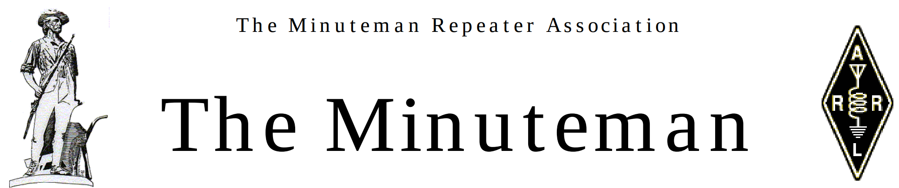
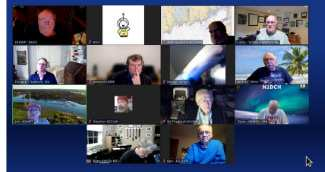
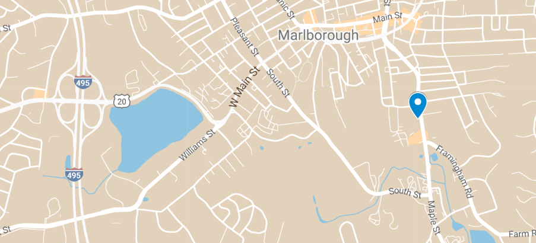
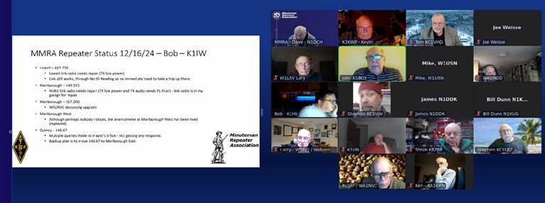
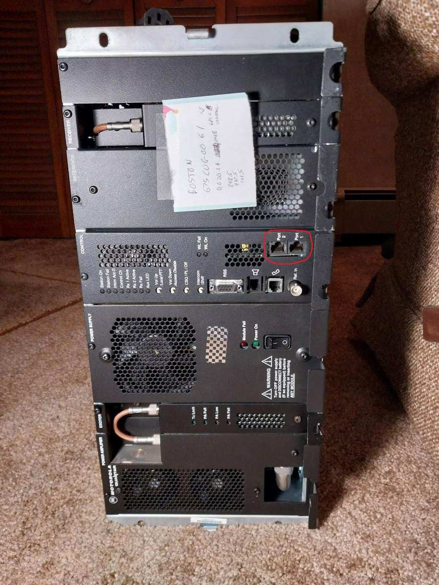

The Minuteman Repeater Association is a non-profit organization providing communications infrastructure and volunteers for community and emergency events.
The 2nd Wednesday of the month: 1/8, 2/12 , 3/12
| ZOOM: | 876 8326 0138 |
| Passcode: | elmer |
Andy’s Ham Radio Linux
Andy Stewart - KB1OIQ
This is a Hybrid meeting: Marlborough Central Fire Station + ZOOM Members: log into your account on https://mmra.org to obtain the ZOOM info. Non-members: send an email to contact@mmra.org to request the ZOOM info.
Andy Stewart (KB1OIQ) will give a talk about a popular software collection called “Andy’s Ham Radio Linux” (AHRL). In its latest version, AHRL has been tested on several flavors of Debian, Ubuntu, and Raspberry Pi OS. AHRL is installed on top of whatever Linux you’re already running. It provides over 80 ham radio programs which are all Free Software, Open Source Software, or equivalently licensed. Andy will discuss the changes to the most recent version, and will also give a high level overview of the available programs.
Andy has been licensed since 2007, and now holds an Amateur Extra license. Andy is a retired computer engineer, having retired in August 2024.
Happy New Year!
Have you made any Ham related New Year’s Resolutions? Mine are to complete my first CW QSO and to do more POTA activations (maybe even a CW one).
The January Elmer forum will be held on Wednesday, January 8 at 7:30 PM. Please see the Elmer section below for Zoom meeting information
Join us for the January 15, 2025, membership meeting at Marlborough Central Fire Station. Andy Stewart ~ KB1OIQ will be discussing: “Andy’s Ham Radio Linux (AHRL)”. AHRL is a collection of amateur radio Linux tools. If you cannot make it to Marlborough, this is a hybrid meeting, and the Zoom meeting information is available on the website (www.mmra.org). You must be logged into the website to view the information.
The Minuteman Repeater Association will have a table at the Algonquin Flea on February 15. Please stop by and say hi. The Flea market is held at the 1Lt. Charles W. Whitcomb School, 25 Union St, Marlborough, MA.
Join us Tuesday nights at 8:00 PM for our weekly Technical Information and Other Stuff (TIaOS) net. There will be a lively discussion on all sorts of HAM issues, including equipment, antennas, software, repeaters, nd other stuff. The main purpose is to test our ability to link up the repeaters in case of an emergency, or to support some event like a marathon. You can also join via EchoLink if your radio is a little under the weather (or in my case, too lazy to walk down to the shack). See below for more information.
You can find out more information about how and when the repeaters are linked on the website (https://www.mmra.org/repeaters/repeater_linking.html).
Please remember to keep your profile up to date (https://www.mmra.org) especially if your email changes. Note that if your callsign changes, send email to contact@mmra.org and we will update your callsign in the database.
Renewals may be done on the website, or you can mail your renewal to:
Minuteman Repeater Association
PO Box 669
Stow, MA 01775-0669Please allow 7 days for us to process your renewal. Please allow 14 days for renewals that are mailed.
The MMRA VE team is looking for additional volunteers. Information on becoming an ARRL-VEC accredited VE is available on the ARRL website https://www.arrl.org/ volunteer-examiners. There is an open book test for certification. You do not need to hold an Amateur Extra license to volunteer. For more information contact Ron Rothman WO1E wo1e@mmra.org or ve@mmra.org.
Upcoming MMRA VE sessions:
The January VE Session will be held on Saturday, January 18th at 9:15 AM, at the Marlborough Public Library, Meeting Room 2, Marlborough, MA
The February VE session will be at the Algonquin Flea Market, Saturday, February 15th at 9:00 AM. The Flea market is held at the 1Lt. Charles W. Whitcomb School, 25 Union St, Marlborough, MA
Walk-ins are welcome.
Please remember to bring a State ID, your FRN, and if upgrading, a copy of your current license (from FCC website) or proof of license from ARRL or QRZ website. For more information, contact Ron ~ WO1E at ve@mmra.org or wo1e@mmra.org.
Net Control Operators wanted! Interested in becoming a control operator for the TIaOS net? Larry is looking for a back-up operator. Contact Larry Banks ~ W1DYJ w1dyj@mmra.org.
Do you know someone that has passed the Technician test (element 2) in the last year? They are eligible for free membership in MMRA. Have them send email to contact@mmra.org requesting membership. The club secretary will contact them with details on how to qualify.
73 ~ Dave ~ N1DCH
In the November newsletter it was announced that the MMRA will be hosting an Elmering/Mentoring session. The intention is to give new or prospective hams a place to get questions answered, how to use their ham radio license, getting on the air, getting their license, info about local ham resources, and programming their radio. This is purposely being held on zoom so that unlicensed people can participate as well as the multimedia aspect of zoom vs. just a repeater contact.

I have heard members state that they do not think they are qualified to be an Elmer. That is completely wrong. If you have a license and have been on the air then you are certainly able to mentor other hams. The experience of new hams is just as important as people who have been licensed for decades. For example I bought most of my radios >20 years ago and I am not the best person to give advice on new equipment.
The first official session was held on Dec 11. There were 14 attendees and the session lasted a good 90 minutes. I want to thank all those who have supported this effort and made themselves available to staff the sessions.
I encourage all members to seriously consider supporting and attending the Elmer Forum. A website with a “flyer” giving info on this is available at https://mmra.org/elmerforum/elmerforum.pdf. The plan is the 2nd Wednesday of each month at 7:30 PM. The next one is Wednesday Jan 8 at 730PM which may happen before this newsletter issue was published. Additional sessions are February 12, March 12, and April 9. To join the meeting:
| ZOOM: | 876 8326 0138 |
| Passcode: | elmer |
73, K1KWP
The MMRA receives donations each year. On behalf of the club I would like to acknowledge and thank the following members who have donated since my list in the November newsletter: KC1POR and KC1VNA.
So far 236 members have either renewed or recently joined since September 1, 2024 when the new membership year (2024-2025) started. This is the same number as the 2023-2024 year. However as of this writing 60 members who entered grace period on September 1 have not yet renewed and will have expired on January 1. This also means that 60 members are new either paid or free new hams.
We have three repeaters (Quincy, Belmont, Billerica) which we will need to relocate before very long. We will likely have significant costs associated with each these repeater re-locations if/when they actually happen:
I previously forecast that I could easily see this being $10000 of spending. Because the membership approved $3000 spending for Billerica at the November meeting I can now see this being $13000 in spending for the three sites. It may not all happen in the same year but we need to prepare for this.
In addition as of this writing the 146.82 repeater is essentially off the air with a new problem which is not yet completely diagnosed. If this requires antenna system repair that is likely another quantum unit of commercial antenna climber ($3000).
73, K1KWP
Marlborough Central Fire Station
215 Maple St (RT 85), Marlborough, MA
Enter through the side classroom door.

MMRA Membership Meeting ~ November 20, 2024-Called to order @ 7: 53 PM)

Before a motion was made, the new location is near the water tower with 3 coax cables not in use that are available for the MMRA to use. The site appears clean from the outside. There are 3 iterations of repeaters along with cabinets, desks and other things that we will need a work party to gather up for disposal. A 6m repeater was taken down at that location. Also, according to Roger, this site has a generator and electricity is provided without cost to the MMRA. Bob adds that we have used this same climber in the past and must have 2 months’ lead time before scheduling his part.
The expense breakdown is as follows:
Dave made a motion to approve up to a $3,000 to move the Billerica Repeater to this new site. Seconded by Larry and the motion passed with a unanimous vote.
The official start for these monthly coaching sessions starts on Wednesday, December 11, 2024 at 7:30 PM and will continue on the 2nd Wednesday of each month thereafter.
We had an unofficial Elmer Forum start on November13th with 2 new Hams participating along with 4-5 of us acting as Elmers. For this practice Elmer Forum session, many questions were asked and answered. We expect these coaching sessions will grow with more participants.
This is an opportunity to learn about the most suitable equipment to buy without breaking your budget, how to program your radios, where and when you can get on the air and so much more.
David’s interest in radio began as a youngster when he hung around his Uncle Myron Hornbaker’s shack ~ W0GFU (SK) in Fowler, Kansas. In 1975 he earned a First-Class Radiotelephone Operator License (now General Radiotelephone Operator License). At a local telephone company David installed IMTS Telephones in automobiles. Later he worked for Wichita, KS television station ~ KAKE-TV as a master control operator. David has worked in the Computer Industry for over 40 years. He owns and is President of DCH Consulting Services, an Information Technology Company, has a Master of Science, Information Technology Degree from the University of Massachusetts and is President of the MMRA.
CHIRP is free, open-source software for programming many radios from various manufacturers. This software is available on Windows, MacOS and Linux. There are two versions of CHIRP: Next and Legacy. Next is the newest version and Legacy is the older version. To download CHIRP go to https://chirpmyradio.com/projects/chirp/wiki/.
Dave described the installation process on the three operating systems. Once installed and the unique cable that connects to a specific radio is in place, the first task is download the contents of what is on the radio to a computer file. The file received is either a clone file or a live file. The difference between these two types of files is the clone file is a static copy of the contents of the radio that can be edited and uploaded later back to the radio versus a live clone file that can be edited on the fly instantaneously to the radio. One other thing to note on the cable that connects from the computer to the radio is using a high-quality cable that has the 2303 or fai chipset for data transfers.
Check https://chirpmyradio.com/projects/chirp/wiki/CableGuide. Reliable sites for locating Repeaters are as follows: https://www.nerepeaters.com/ and https://amateur-radio.net/chirp/.
At Central Marlborough Fire Station Training Room:
On the Zoom Meeting:
Meeting Adjourned at 9:20 PM
Respectfully Submitted by Stephen M Babbitt, KC1LPZ, Clerk
MMRA Business Meeting - December 18, 2024-Called to order @ 7: 31 PM
The discussion varied. Roger suggested we keep it simple to name and callsign. Membership status ranged from member to non-member all the way from member to membership in the grace period (September 1st to December 31st) to recently expired membership from January 1st onward to one year or longer. No decision on this subject was made at tonight’s meeting other than investigating it further before any formal motion is made.
These Elmering sessions are on Zoom to both licensed and unlicensed Hams on the 2nd Wednesday of each month. November 13, 2024, was our initial informal Elmer Meeting Event, which was attended by a few people. On December 11, 2024, our first formal Elmer Session, was attended by 14 people, with one who was not licensed yet. We had several questions asked from recent new Hams. Many questions about licensing and upgrading, several questions on VHF/UHF and even more HF related questions.
One comment Kevin saw in the zoom chat section said, “I have learned more about ham radio from the MMRA than from the ARRL.” We had some attendees that found round zero (from November) interesting enough that they came to this December forum and plan to come to the next in January.
We have 915 followers on Facebook
Should we have regular posts:
Should we add other Social Media? Return to X (Twitter) other Social Media Sites?
Tonight’s discussion includes putting some of our presentations on YouTube to draw attention to the MMRA and Amateur Radio. Other social media sites where younger people are active received discussion. Updating our events was discussed with K8ZBE offering to assist in some of the updating.
Meeting Adjourned at 8:46 PM Respectfully Submitted by Stephen M Babbitt, KC1LPZ, Clerk
Thanks to the efforts of
The Billerica antenna is now vertical again. The old and unused 6m antenna was also taken down. Getting people to help on a workday can be a challenge, so many thanks to these volunteers for taking time out of their day to help out!
73, Bob, K1IW
Here (included photo) is the Boston 900 MHz Quantar. It has been completely aligned, programmed, tested on the test pair, and will be burned in for a week or two. You will notice a red circle. I have added a V.24 interface board and cover plate with cutouts for the jacks. This will allow us to do P25 networking, if we want to, at some time in the future.
73 – Roger Coulson, WA1NVC

Elmer Forums - ZOOM only – 1/8, 2/12, 3/12
January 20, 2025: Membership Meeting
February 18, 2025: Business Meeting - Zoom
March 19, 2025: Membership Meeting
April 16, 2025: Business Meeting - Zoom
May 21, 2025: Annual Meeting & Elections
June 18, 2025: Business Meeting - Zoom
Net Control Operators:
To connect using Echolink during the Net: Echolink Conference NEW-ENG2
NOTE: we need another NC to be available as a substitute. If you are interested, email W1DYJ@mmra.org.
| President | Dave Hornbaker | N1DCH |
| Vice President | John Spencer | WA1MDD |
| Secretary | Ken Horton | KA1GFN |
| Treasurer | Kevin Paetzold | K1KWP |
| Clerk | Stephen Babbitt | KC1LPZ |
| Director >2025 | Bob DeMattia | K1IW |
| Director >2025 | Roger Coulson | WA1NVC |
| Director >2026 | Rob Evans | N1BE |
| Director >2026 | James Lee | N1DDK |
| Technical Officer | Bob DeMattia | K1IW |
| Belmont 145.43 | Ed Curley | KC1CLA |
| Billerica 147.12 | Mike Rioux | W1USN |
| Boston 146.82 | John Mullaney | K1BOS |
| Boston 927.0625 | Rick Zach | KK1RZ |
| Brookline 145.16 | Joyce DeMattia | K1MRA |
| Burlington 224.88 | Bruce Pigott | KC1US |
| Hopkinton 448.885 | Bryan Cerqua | W1BRI |
| Lowell 442.25 | Bob Phinney | K5TEC |
| Marlborough 53.81 | Bryan Cerqua | W1BRI |
| Marlborough (everything else) | Bill Northup | N1QPR |
| Mendon 146.61 | Kevin Paetzold | K1KWP |
| N. Reading 146.715 | Bruce Pigott | KC1US |
| N. Reading 446.775 | Larry Banks | W1DYJ |
| Quincy 224.40 | Bill Dunn | N1KUG |
| Quincy 146.67 | Bryan Cerqua | W1BRI |
| Weston 146.79 | Joe Weisse | W1HAI |
| Weston 224.70 | Eddie Mulhern | N1NOM |
| Weston 442.70 | Dave Hornbaker | N1DCH |
| Newsletter Editor | Larry Banks | W1DYJ |
| Emerg. Coord. | Kevin Paetzold | K1KWP |
| Pub. Serv. Coord. | Bruce Pigott | KC1US |
| VEC Liaison | Ron Rothman | WO1E |
| Net Manager | Larry Banks | W1DYJ |
| Web Page Editor | Bob DeMattia | K1IW |
| Social Media Coord. | Steve Umans | K8ZBE |
| President Emeritus | Bob DeMattia | K1IW |
| Technical Officer Emeritus | Bryan Cerqua | W1BRI |
MMRA Control Operators Responsibilities: https://www.mmra.org/MMRACOPolicy-March2019.pdf
The Minuteman Repeater Association (MMRA) is dedicated to Amateur Radio and public service. The MMRA maintains a large system of repeaters in Eastern Massachusetts.
The MMRA meets each month from September to June. Meeting times, locations, and talk-in frequency vary and are announced in this newsletter and on weekly nets. Meetings are open to all interested parties. Guest speakers and programs of general interest occur in September, November, January, March, and May. The intervening meetings are also open to all members and are for general business.
The Minuteman newsletter is emailed one week before each general interest meeting. Members are encouraged to submit articles: send to the editor at newsletter@mmra.org. The deadline for articles is the last Friday of the month preceding the meeting.
Each Tuesday evening at 8pm the MMRA links most of the repeaters for an open net. The topic is “Technical Information and Other Stuff”. Join us!
Membership in the MMRA is open to all radio amateurs. Annual dues are $25 per individual or $35 per family. See our website for details.
Contact information is listed on the top of the last page of this newsletter. No part of this newsletter can be copied or posted elsewhere without prior approval from the club.
MMRA members and all other operators are strongly encouraged to report repeater activity that does not abide by Part 97 rules or accepted amateur radio practice to the board of directors at contact@mmra.org or via other means.
The most effective way (and probably the only effective way) to deal with an individual causing QRM is to NOT engage with that individual on the air. Please include the time and date of any incident.
Check out https://www.mmra.org/exam.html or email ve@mmra.org.
Ask your friends to become a member Just let them know that it is not fully automated. Although they can log into the MMRA website immediately, they need to be manually processed. This could take up to week.
If you haven’t updated your MMRA profile in a while, now is the time! Go to https://mmra.org and log in to do so.
Previous issues of the MMRA Newsletter are available at the newsletter archive on https://mmra.org/. They are also available at DLARC.
Our weekly club net on most of the MMRA repeaters, Tuesday night at 8:00 pm local.
This ARRL NTS net is active on our repeaters Sunday to Friday evenings from 9:45-11 PM and Saturday from 10-11.
Sundays at 11:00 AM local.
First Monday at 8:30 PM local.
Sundays at 7 PM local
https://www.mmra.org/repeaters/repeater_linking.html
New England Sci-Tech Inc is a new 501(c)(3) STEM education center, amateur radio training center, and maker space located at 16 Tech Circle, Natick. It is home to New England Amateur Radio Inc (NE1AR) and the youth radio club Sci-Tech Amateur Radio Society (STARS). NE Sci-Tech welcomes memberships and donations via https://www.NESciTech.org or https://www.NE1AR.org.
What is the best way to get connected on the MMRA repeater system? Try announcing yourself! Just say your call sign followed by “listening”. If you want, you can include the last 3 digits of the repeater frequency. For example, “N1DCH listening” or maybe “N1DCH listening on 925”, you may very well get a response. Try to connect by announcing yourself several times.
Most of the time, Marlborough Hub1 (449.495) is linked to the following repeaters, Boston (146.820), North Reading (446.775 and 146.715), Mendon (146.610), Lowell (442.250), Hopkinton (448.225) and Quincy (146.67.) Remember that when the repeaters are linked, you need to wait two or three seconds after you key up and before you speak. This is especially important on the TIaOS net on Tuesday when most of the repeaters are linked.
You can also link (and delink) the repeaters yourself. See the information you received when you became a member, or check the User Control Codes once you log into the MMRA web.
Try one of the non-linked repeaters too. There are Hams monitoring them as well. For more information on the repeater network and how it is linked at various times, check out https://mmra.org/repeaters/repeater_linking.html.
The content of this newsletter is licensed under CC-BY-4.0. This license permits you to:
Under the following terms: